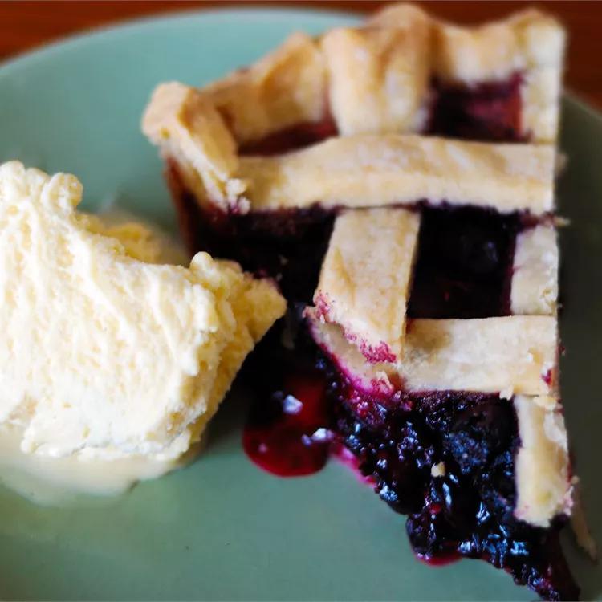

Blueberry Pie

Description
This blueberry pie, made with fresh berries, is a beautiful
sight with a lattice top.
Ingridients
- ¾ cup white sugar
- 3 tablespoons cornstarch
- ½ teaspoon ground cinnamon
- ¼ teaspoon salt
- 4 cups fresh blueberries
- 1 (14.1 ounce) package double-crust pie pastry, thawed
- 1 tablespoon butter
Back to main page